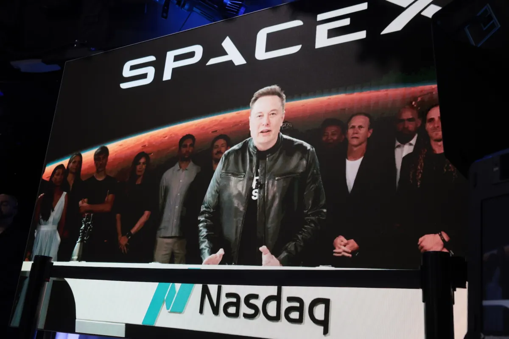
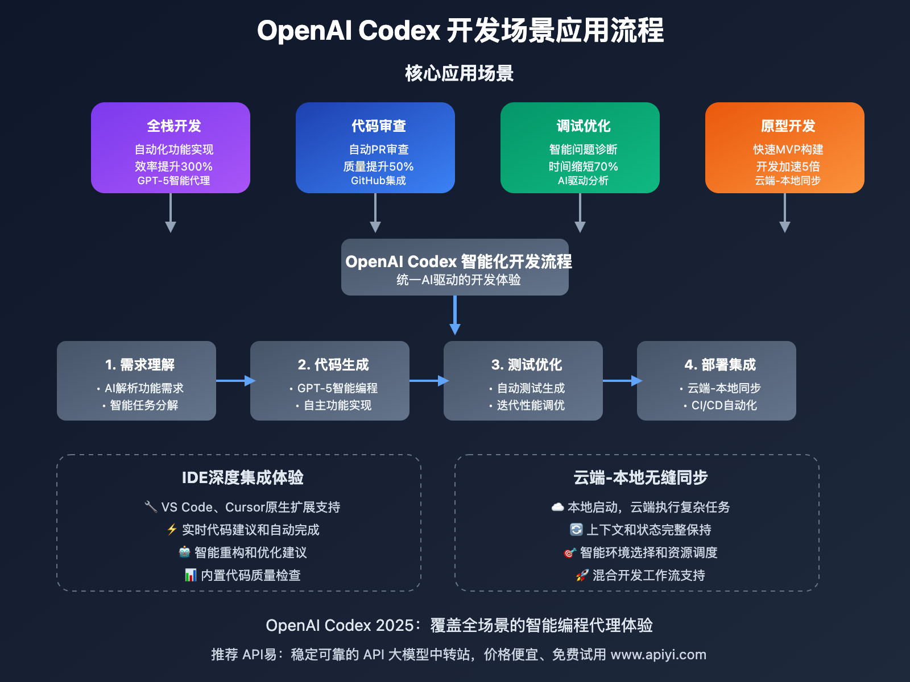
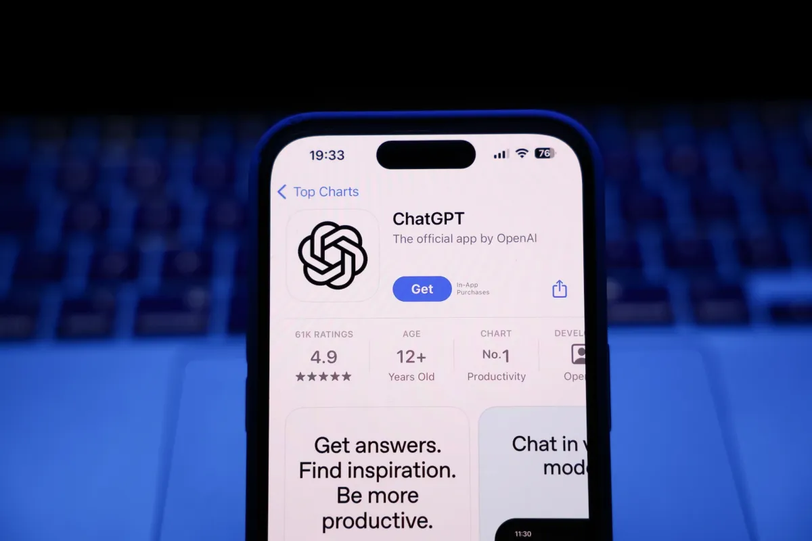
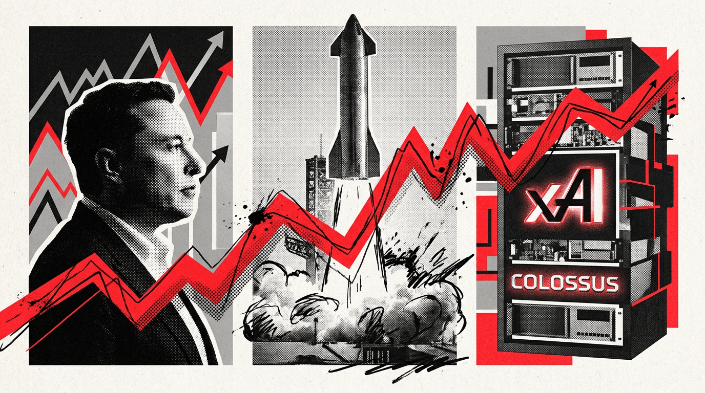
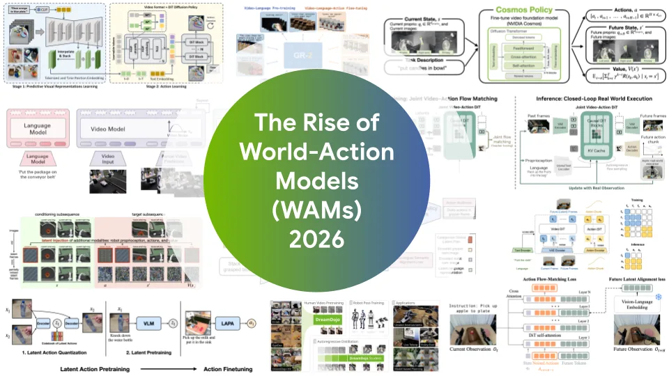
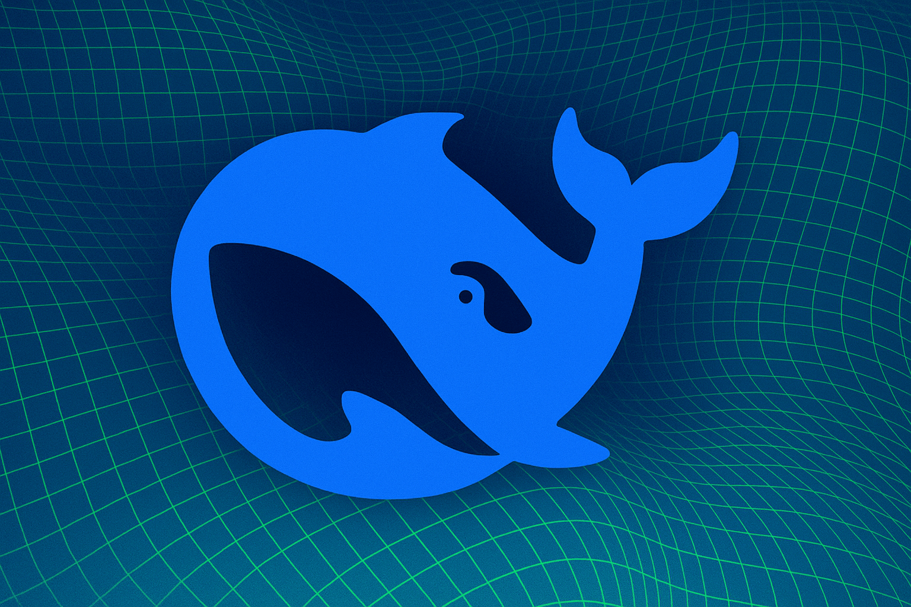
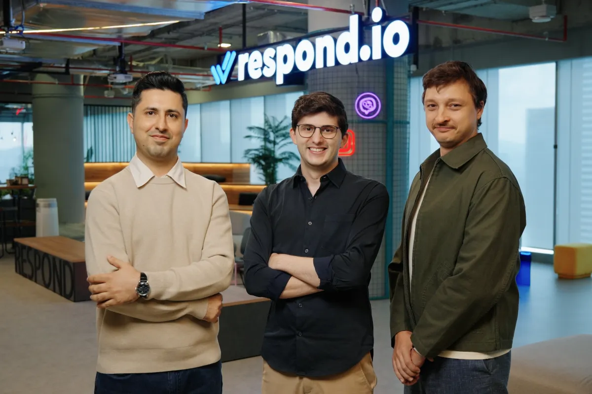

2026-06-17 // VOL_260
AI 资产开始换手
编码入口、agent 权限、算力能源和应用分发同时被重估。
今天的 AI 新闻不再是单纯比模型谁更聪明，而是比谁能拿到入口、资产、权限和电力。SpaceX 用 600 亿美元吞 Cursor，OpenAI 把 Ona 并进 Codex，Arcade、Probably、EU AI Act、xAI 发电争议都指向同一件事：AI 开始进入真实系统，账单和责任也开始上桌。
📌 今日趋势：AI 资产开始换手
今天最强的共同信号是：AI 的核心价值正在从模型参数转向入口、权限、环境和基础设施。SpaceX 用 600 亿美元股票交易买 Cursor，OpenAI 收购 Ona 给 Codex 搭持久云端工作间，Arcade 融资做 agent 授权，EU 把 AI 内容标识写进执行手册，xAI 的数据中心发电争议甚至被拉到国家安全叙事里。
这对中国创作者、创业者和 AI 从业者很现实：只会包装聊天功能的产品会被挤到低价区，真正值钱的是能接住开发者、企业系统、数据权限、算力账单和合规证据的控制层。AI 应用以后不是“能回答”就够了，而是要能证明谁授权、谁执行、谁付费、谁负责。
接下来 1-4 周要盯三件事：Cursor 交易会不会重定 AI coding 工具估值，Codex 持久云环境会不会逼开发工具进入托管工作流，欧盟透明度规则和 agent 授权融资会不会把企业 AI 的采购标准从模型能力推向治理能力。
01
Key Intelligence
全球要闻

TechCrunch
SpaceX 600 亿美元收购 Cursor
来源: TechCrunch · 2026-06-17 · 原文链接
TechCrunch 于 2026 年 6 月 16 日 4:21 AM PDT 报道，SpaceX 同意以 600 亿美元股票交易收购 Cursor 母公司 Anysphere，预计交易在第三季度完成。这距离 SpaceX IPO 只有数日，也延续了其 4 月与 Cursor 达成合作并保留收购选项的安排。
Janet 锐评：
这不是普通收购，是把开发者入口直接买进 Musk 的 AI 版图。Cursor 本来还在谈 20 亿美元融资、500 亿美元估值，现在被 600 亿美元股票交易截胡，说明 AI coding 已经从工具层变成战略资产。国内开发工具团队别只盯补全效果，真正的护城河会转向工作流、企业账号、代码上下文和算力绑定。

OpenAI
OpenAI 收 Ona 给 Codex 搭云工位
来源: OpenAI · 2026-06-17 · 原文链接
OpenAI 在 2026 年 6 月 16 日宣布计划收购 Ona，把其安全、客户可控的云端执行环境并入 Codex。OpenAI 称这会让 Codex 获得持久工作空间，支持跨软件和知识工作的长时运行 agent，并更适合企业生产流程。
Janet 锐评：
Codex 缺的不是再会写几行代码，而是一个能长期待命、能接企业系统、能被审计的工作间。OpenAI 买 Ona，就是给 agent 找办公桌、钥匙柜和日志本。中国做 AI 编程工具的人要警醒：未来竞争会从 IDE 插件变成托管环境，谁能安全地跑长任务，谁才有企业预算。

TechCrunch
ChatGPT 份额变小到半壁下
来源: TechCrunch · 2026-06-17 · 原文链接
TechCrunch 于 2026 年 6 月 16 日报道，Sensor Tower 的 2026 年 State of AI Report 显示，ChatGPT 虽仍是全球最受欢迎的 AI assistant，但全球市场份额首次跌破 50%。报告称用户正在 Gemini、Claude、Grok 等助手之间迁移。
Janet 锐评：
这条数据的刺痛点很明确：ChatGPT 不是没增长，而是默认入口开始松动。用户一旦习惯在多个助手之间切换，模型品牌就会变得像浏览器标签页一样可替换。创作者和工具团队要把工作流沉淀在自己的资料、账号和模板里，别把全部用户关系押给一个聊天入口。
Artificial Intelligence News
EU 给 AI 内容标识上规矩
来源: Artificial Intelligence News · 2026-06-17 · 原文链接
Artificial Intelligence News 于 2026 年 6 月 16 日报道，欧盟发布 AI 内容标识 Code of Practice，帮助企业满足 EU AI Act 第 50 条透明度义务。相关要求将在 2026 年 8 月 2 日起适用，覆盖 deepfake、公共议题 AI 文本，以及与 AI 系统交互时的告知。
Janet 锐评：
欧洲这次不是喊口号，而是把“要不要标 AI 生成”拆成可执行清单。对出海团队来说，内容生产、客服 bot、营销文案和公共议题自动发布都要开始留证据。国内创作者也别觉得遥远，平台迟早会要求标识来源，提前把人工审核、素材来源和生成记录整理好，比事后删帖强。

The Decoder
DOJ 替 xAI 发电站护航
来源: The Decoder · 2026-06-17 · 原文链接
The Decoder 于 2026 年 6 月 16 日报道，美国司法部在 NAACP 针对 xAI Mississippi 数据中心燃气涡轮机的诉讼中，以国家安全理由为 xAI 辩护。争议焦点包括未许可燃气涡轮机、Colossus 2 数据中心供电，以及 Grok 在政府任务中的重要性说法。
Janet 锐评：
AI 基建已经不只是云服务商的机房问题，而是电力、环保、军方和法院一起下场。xAI 如果能用国家安全叙事压过地方污染争议，后面每个大模型数据中心都会学这套话术。中国企业看热闹也要看门道：算力扩张的真正瓶颈不是模型，而是电、地、许可和公众信任。
02
Model Updates
模型动态

NVIDIA Developer Blog
NVIDIA 把世界模型写进机器人
来源: NVIDIA Developer Blog · 2026-06-17 · 原文链接
NVIDIA Developer Blog 在 2026 年 6 月 16 日发布文章，系统解释 World-Action Models 的兴起。文章将 DreamZero、LingBot-VA、UniPi、mimic-Video 等归入复用视频或世界模型骨干、同时输出机器人动作的方向，并把它放在 physical AI 的关键路径上。
Janet 锐评：
机器人现在最缺的不是会说话，而是能预判动作后果。World-Action Model 的价值在于把“想象下一帧”和“决定下一步”连起来，少一点盲动，多一点可训练的现场判断。国内做具身智能的团队别只堆人形展示，先把狭窄场景里的动作预测、失败回滚和数据闭环做扎实。
TechCrunch
Probably 拿 900 万美元治幻觉
来源: TechCrunch · 2026-06-17 · 原文链接
TechCrunch 于 2026 年 6 月 16 日报道，Probably 完成 900 万美元种子轮融资，投资方包括 Andreessen Horowitz。该公司试图用更严格的方法捕捉 AI 幻觉和事实错误，把确定性校验器与较小模型结合，提升可靠性并控制成本。
Janet 锐评：
幻觉问题终于有人不再靠“提示词玄学”解决了。Probably 的方向说明企业更愿意为可验证、可拦截、可解释的可靠性付钱，而不是再买一个口才更好的模型壳。做 RAG、客服和知识库产品的人要学这个思路，把事实校验做成产品层能力，不要把错误都甩给用户复核。

The Decoder
DeepSeek 融 74 亿美元保控制权
来源: The Decoder · 2026-06-17 · 原文链接
The Decoder 于 2026 年 6 月 16 日报道，DeepSeek 完成首次外部融资，金额超过 500 亿元人民币，约合 74 亿美元，估值超过 500 亿美元。报道引述 The Information 信息称，融资结构通过有限合伙安排保护创始人梁文锋控制权。
Janet 锐评：
DeepSeek 这轮融资不是“又一个大模型融钱”，而是中国 AI 资本信心的一次集中下注。创始人保控制权很关键，因为模型公司最怕被短期商业化节奏拖着跑。国内创业者要看到两面：资本会继续追逐低成本强模型，但拿钱之后，算力、产品化和企业交付账单也会立刻变重。
The Guardian
Anthropic Fable 争议逼出公共 AI 讨论
来源: The Guardian · 2026-06-17 · 原文链接
The Guardian 于 2026 年 6 月 16 日刊发 Bruce Schneier 评论，围绕 Anthropic Fable 模型被限制一事展开讨论。文章认为问题不只是一款模型，而是能力快速增长、监管不足、开放与封闭路线冲突同时爆发。
Janet 锐评：
Fable 争议真正暴露的是：前沿模型已经被当成准基础设施和准军用品处理。闭源公司想保护商业壁垒，政府想控制风险，开发者想要透明和可复现，这三方很难同时满意。中国从业者别只围观美国内斗，要提前准备模型可替代、供应链可切换和敏感能力隔离方案。
03
Tech Insights
技术深度
SiliconANGLE / WSJ
Arcade 6000 万美元押 agent 授权
来源: SiliconANGLE / WSJ · 2026-06-17 · 原文链接
SiliconANGLE 于 2026 年 6 月 15 日报道，Arcade AI 完成 6000 万美元融资，用于建设面向 AI agents 的授权平台。WSJ 同日披露，该轮由 SYN Ventures 领投，Morgan Stanley 和 Wipro 参与，Arcade 重点解决 agent 在企业应用、数据库和工具里能做什么、不能做什么。
Janet 锐评：
Agent 真正进企业后，老板第一句不会问“它聪不聪明”，而是问“它凭什么能改我的数据”。Arcade 押中的就是这个痛点：推理和执行要分层，权限要可控，日志要能审。国内做 MCP、自动化和内部 agent 的团队要把授权当第一功能，而不是发布后再补安全白皮书。
TechCrunch
SpaceX 估值冲到 2.7 万亿美元
来源: TechCrunch · 2026-06-17 · 原文链接
TechCrunch 于 2026 年 6 月 16 日报道，SpaceX 上市后估值膨胀至约 2.7 万亿美元，并一度超过 Amazon。报道称，股价跳涨与其宣布 600 亿美元收购 Cursor 有关，但 SpaceX 2025 年收入 187 亿美元、亏损 49 亿美元，和 Amazon 2025 年 7170 亿美元收入、780 亿美元利润形成强烈反差。
Janet 锐评：
这就是 AI 资本市场最魔幻的一幕：亏损公司靠 AI 叙事和稀缺流通盘，估值压过赚钱机器。投资人买的不是现在的财报，而是 Starlink、算力租赁、xAI 和 Cursor 打包后的想象空间。创业者别被这种估值麻醉，二级市场愿意讲故事，不代表客户会为你的 Demo 付款。

TechCrunch
Respond.io 融资 6250 万美元扩展消息入口
来源: TechCrunch · 2026-06-17 · 原文链接
TechCrunch 于 2026 年 6 月 15 日 11:59 PM PDT 报道，马来西亚客户消息平台 respond.io 完成 6250 万美元融资，并计划在北美和欧洲进行收购。公司服务企业在 WhatsApp、Instagram、Messenger、Telegram、TikTok 等渠道处理客户对话，AI 自动化是其增长重点之一。
Janet 锐评：
企业 AI 不一定从炫酷 agent 开始，很多时候就是从一堆消息入口没人管开始。Respond.io 的价值在于把分散对话、销售线索和客服动作收进同一张表，再让 AI 接管重复环节。做跨境电商和本地服务的人要少迷信单一平台流量，先把客户对话资产收回来，否则 AI 再强也只能帮别人变现。
Artificial Intelligence News
AI 红队变成上线前必修课
来源: Artificial Intelligence News · 2026-06-17 · 原文链接
Artificial Intelligence News 于 2026 年 6 月 16 日发布 AI red teaming 解释文章，强调企业部署 AI 系统前需要通过攻击模拟发现安全和可靠性问题。文章提到 AI 事故从 2024 年的 233 起上升到 2026 年的 362 起，prompt injection、数据操纵、绕过 guardrails 等都需要被提前测试。
Janet 锐评：
红队测试以前像安全团队的专业爱好，现在会变成 AI 产品上线前的体检单。只要 agent 接了工具、数据库和业务流程，提示词攻击就不再是段子，而是直接改数据、泄资料、乱审批的风险。国内企业买 AI 系统时要把红队报告写进验收，不然出了事只能开会互相甩锅。
04
Investment & Prediction
投资视角 · 大胆预测
今日核心预测
TechCrunch
Cursor 交易把编程牌桌抬贵
来源: TechCrunch · 2026-06-17 · 原文链接
Cursor 被 SpaceX 以 600 亿美元股票交易收购前，TechCrunch 曾报道其正在洽谈 20 亿美元融资，估值约 500 亿美元。交易公布后，AI coding 从开发者工具变成巨头争抢的企业入口和模型训练反馈源。
Janet 锐评：
我的判断很简单：AI coding 的估值会继续分化，头部工具被当作入口资产，小工具会被订阅价格战碾压。真正值钱的是日活开发者、企业代码上下文、自动化测试闭环和模型反馈数据。国内投资人别再只看“有没有 Copilot 平替”，要看它能不能占住开发流程的关键动作。
The Decoder
DeepSeek 大融资抬高国产模型门票
来源: The Decoder · 2026-06-17 · 原文链接
DeepSeek 首次外部融资超过 74 亿美元、估值超过 500 亿美元，使其成为中国最受关注的 AI 公司之一。报道显示，该轮资金会强化研发、算力基础设施、agentic AI 工具和开源技术。
Janet 锐评：
这轮融资会抬高整个国产模型赛道的心理价格，也会抬高外界对交付结果的要求。DeepSeek 之前靠低成本和开源叙事赢口碑，拿了大钱以后就要证明它能把模型优势转成企业合同和生态控制力。二线模型团队要小心，资本会更集中，单纯刷榜会更难拿钱，真正能活下来的会是有稳定场景、推理成本和开发者生态的玩家。
WSJ
Arcade 融资说明权限层先赚钱
来源: WSJ · 2026-06-17 · 原文链接
Arcade 的 6000 万美元 A 轮融资显示，投资人正在把 agent 授权、治理和审计看成独立基础设施。该公司强调把 AI 请求和组织现有目录、合规规则、私有环境、可审计日志结合，而不是只给模型套一层工具调用。
Janet 锐评：
企业 AI 最先赚钱的未必是最聪明的 agent，而是防止 agent 闯祸的权限层。因为一旦 AI 真的能操作业务系统，CIO 会先买刹车，再买油门。国内创业者可以从财务、人事、客服、采购这些高风险流程切入，把可授权、可审计、可撤回做成刚需。
05
Creator Toolbox
创作者工具箱
Janet 快车箱
DATA SOURCES: TechCrunch, OpenAI, Artificial Intelligence News, The Decoder, NVIDIA Developer Blog, The Guardian, SiliconANGLE / WSJ, WSJjanet-public-site · © 2026 Janet Yao